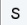
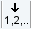

dpp
NAME
dpp - Displays processing status parameters (1D, 2D, 3D)
DESCRIPTION
The command dpp displays the processing status parameters. Entering dpp is equivalent with a click on the ProcPars tab and Toggle status parameter view in the dataset window.  .
.
The processing status parameters are set by processing commands and represent the status of the processed data. As such, they can only be viewed in the dpp window.
The following buttons are available:
 Undo the last modification (unused for status parameters).
Undo the last modification (unused for status parameters).
 Switches between processing and processing status parameters.
 Changes the processing dimension of the current dataset.
Show eretic parameters.
Switches to Maxent parameters view.
Collapse or expand all parameters.
 Search for the parameter specified in the search field.
Search for the parameter specified in the search field.
Processing status parameters can also be viewed by entering their names on the command line. For example:
- s ft_mod - Display the processing status parameter FT_mod.
- s nc_proc - Display the processing status parameter NC_proc.
INPUT FILES
<tshome>/classes/prop/
pared.prop - Parameter properties file.
<tshome>/exp/stan/nmr/form/
proc.e - Processing parameter format file.
<dir>/data/<user>/nmr/<name>/<expno>/pdata/<procno>/
procs - Processing status parameters.
On 2D and 3D data the files proc2s and proc3s are used for the second and third direction, respectively (see also chapter Parameter files).